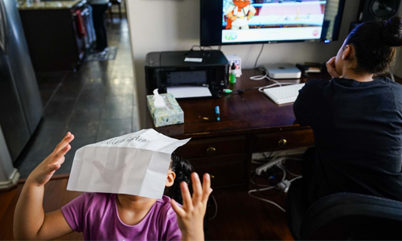
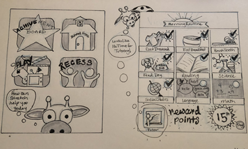
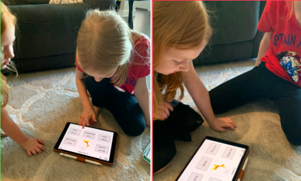
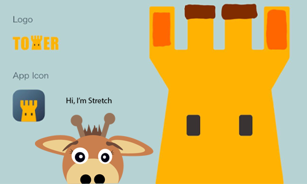
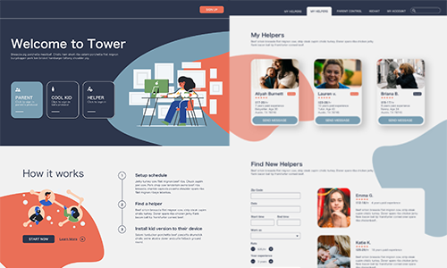

Project: Tower
Kids Virtual Classroom Helper
Research | Wireframes | Prototyping | Visual Design

- Families are forced to be at home and socially isolated without much time to prepare for such an event. Parents are trying to balance working from home and schooling their children simultaneously.
- They are facing problems with time management, entertainment, excess energy and productivity.
Problem Statement
- I conducted interviews with parents working from home while trying to homeschool elementary aged school children, along with their children and a few Apple Education Support Specalist to get a realistic view of the problem.
- 9 parents | 14 Kids | 3 Apple Education Support Specalists
Research
-
Using the Research Data I created visualizations of the data using a workflow for the child and the parent to identify pain points in the users day, and an empathy map that helped create personas from the research interviews.
- Empathy Map | Persona
Packaging the Data
{kind=link}

-
The focus of the project became to create a scheduler that could help connect the family at home to the school. Its aim would be to keep the child productive without constent aide of the parent.
- Features: Virtual Schedule that connects to the parents schedule and school | Online Classroom Conference Feature | Reward and Play Options
- Classroom Confrence
- Kids Home Screen
- Parents Home Screen
Ideation Sketched
{kind=link}
{kind=link}
{kind=link}
-
This low-fi prototype was used to test the basic child interactions.
- Invision
Low-Fi Child's Interface Prototype

- Include profiles for different age groups or abilities
- Icons are imperative for young users
- Kids were drawn to the reward and play options
Prototype | Low Fidelity Testing Takaways

- As things moved along and came together the brand earned the name Tower, which is the name of a group of giraffes, gaining it's name sake from the face of the virtual helper, Stretch, the friendly giraffe.
- Stretch: Full
- Stretch: Peak
- Stretch: Shhh
Meet Tower and Stretch
{kind=link}
{kind=link}
{kind=link}

- Currently there is a working version of the adult prototype to be tested
- Home
- Schedule
- Virtual Helper
Parental Tower Prototype
{kind=link}
{kind=link}
{kind=link}
- The second working version of the adult prototype to be tested